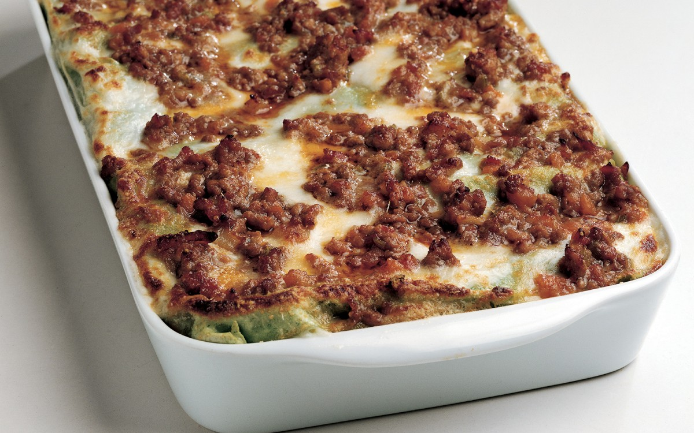
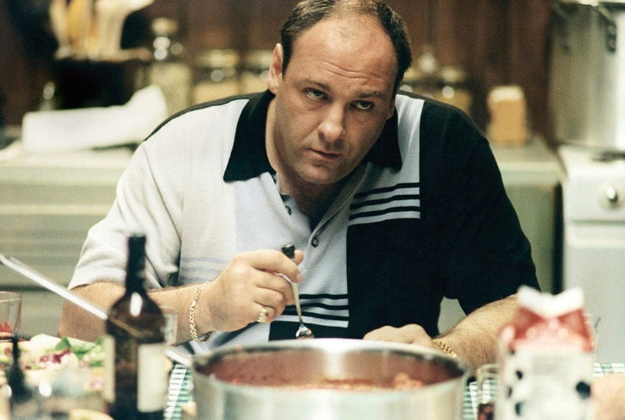

Lasagna

A beloved Italian classic!
Layers of creamy béchamel, rich sauce and thin pasta sheets will
keep you coming back for more.
Ingredients
Serves 6 people
- 3/4 lb of ground beef
- 2 oz of chopped carrot
- 2 oz of chopped onion
- 1/2 cup of dry white wine
- broth
- salt
- 2 2/3 cup of all-purpose white flour
- 1/2 lb of spinach
- 1/2 cup of unsalted butter
- fine salt
- 1/2 cup of parmigiano reggiano grated
- 1/4 lb of pancetta
- 2 oz of chopped celery
- 1 1/4 cups of tomato purée or peeled, chopped tomatoes
- 1/2 cup of whole milk
- olive oil or unsalted butter
- pepper
- pepper
- 2 large eggs
- 1 cup of all-pupose flour
- 1 qt of fresh whole milk
- nutmeg
Steps
- Begin by preparing the ragù (meat sauce). First, cut the pancetta into 1/4" cubes. Chop the cubes and sauté them in
a pan. In another pan, add 3 Tbsp. oil or butter, the celery, carrot, and onion, and cook until soft. Add the ground
beef and cook until well browned, 25-30 minutes. Add the wine and stir until it evaporates. Add the tomato purée,
cover, and simmer slowly for around two hours, adding broth as needed. When nearly done, add 1/2 cup milk to cut the
acidity of the tomatoes. Season with salt and pepper to taste.
- For the lasagna sheets: Bring water to a boil in a large pot and add salt. Boil and purée the spinach. Mix 2 2/3
cups flour, eggs and spinach into a compact dough. Roll into thin sheets (1/16") and cut into large rectangles. Line
a tray with clean tea towels. Boil the pasta sheets until just softened (around 20 seconds) and transfer to the tea
towels to dry.
- Preheat the oven to 325°F.
- For the béchamel: In a saucepan, heat 1/2 cup butter over low heat, add 1 cup sifted flour, and whisk constantly.
Cook this roux until golden, then add 1 qt. milk, salt, and nutmeg. Remove from heat.
- Grease a 9"x13" baking dish with butter and top with a layer of the lasagna sheets, then a layer of sauce, then the
béchamel, and top with spoonful of Parmigiano. Repeat process until the ingredients are finished. Cover the final
layer with béchamel, pats of butter, and bake for around 30 minutes. When the top is golden, remove and serve.
